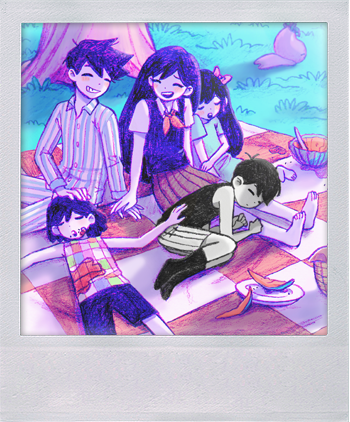
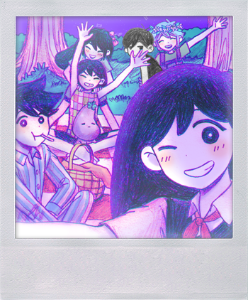
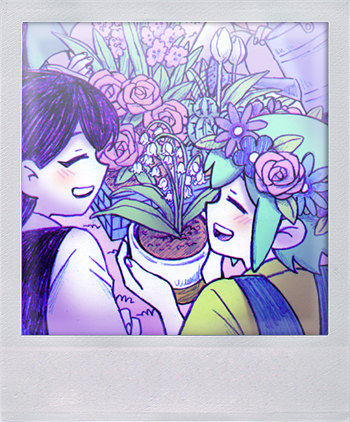
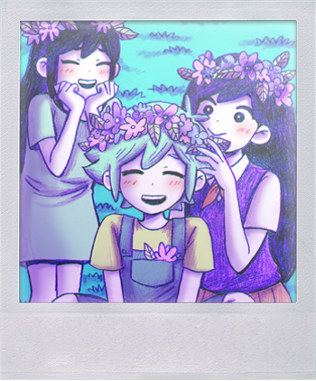

Headspace
White Space
Vous démarrez le jeu dans le "White Space", ou "L'espace blanc" dans le patch FR.
Vous avez vécu ici depuis aussi longtemps que vous vous en souvenez.
Le nom du personnage que vous jouez est OMORI
Avec vous:
- Mewo le chat
- Un ordinateur
- Ton carnet de croquis
- Une boite de mouchoirs pour essuyer tes peines
- Une ampoule sombre au lieu de lumineuse
- Une porte
Vous pouvez observer et interagir avec chaque objet mais la porte reste déverouillée- Jusqu'a ce que vous alliez cherchez le couteau qui est tombé plus loin. Vous pouvez désormais sortir du white space via la porte.
Vast forest
Bienvenue dans les premières zones du DREAM WORLD! Vous commencez par arriver dans la Neighbor's Room; Vous y rencontrez vos amis AUBREY, HERO et KEL. HERO est le grand frère du groupe, gentil et fiable, AUBREY est une personne très joyeuse et elle est toujours très enjouée de voir OMORI tandis que KEL est une personne competitive qui aime embeter ses amis pour montrer son affection envers eux; Il a un sens de la justice fort et est assez négligent et impulsif, mais il a bon cœeur. KEL et AUBREY sont assez souvent en conflit, mais rien de sérieux.
Vous entrerez ensuite dans le terrain de jeu; ou vous rencontrerez encore plus de personnages, mais les principaux sont BASIL et MARI; MARI est la grande sœur d'OMORI, elle est gentille, aime faire des blagues malicieuses et joue son role de grande sœur pour l'ensemble du groupe. BASIL est présenté comme timide et anxieux socialement, mais ses amis sont très importants pour lui malgré ses anxiétés. Il aime beaucoup ses plantes et la photographie, voici quelques photos de son album!




Dans ce parc, vous apprenez les méchaniques de combat, qui sont principalement inspirées des JRPG à combat en tour par tour (exemples ici) avec des coeurs pour la vie et du jus pour le "mana" mais avec ses propres modifications a cette base, par exemple : les émotions
| Niveau | Heureux | Triste | Énervé |
|---|---|---|---|
| 1 | HEUREUX Chance x2, Vitesse x1.25, Taux de réussite -10 | TRISTE Défense x1.25, Vitesse x0.8, 30% des dégats sont absorbés par le jus à la place. | ÉNERVÉ Attaque x1.3, Defense x0.5 |
| 2 | EUPHORIQUE Chance x3, Vitesse x1.5, Taux de réussite -20 | DÉPRIMÉ Défense x1.35, Vitesse x0.65, 50% des dégats sont absorbés par le jus à la place. | ENRAGÉ Attaque x1.5, Defense x0.3 |
| 3 | EXALTÉ Chance x3, Vitesse x2, Taux de réussite -30 | DÉVASTÉ Défense x1.5, Vitesse x0.5, 100% des dégats sont absorbés par le jus à la place. | FURIEUX Attaque x2, Defense x0.15 |
OMORI et son groupe constitué de AUBREY, KEL, HERO et BASIL (MARI restant à ses nappes de picnic attandant ses amis pour leur faire reprendre des forces) se dirigent vers la maison de BASIL pour voir l'album photo. Une fois la bas... Un trou noir se forme, renvoyant OMORI dans l'Espace Blanc... pour qu'il se réveille de son rêve, on parlera de ce qui se passe a chaque fois qu'OMORI se réveille dans la page "Faraway"; sentez vous libre de changer entre les 2 a chaque fois, c'est comme ça que le jeu marche.